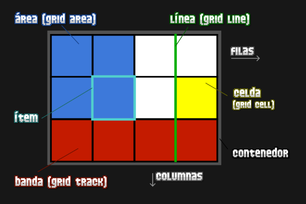
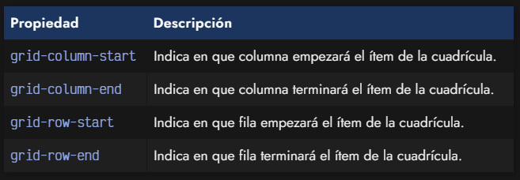

La disposición y distribución de elementos en una página web con CSS
puede resultar especialmente desafiante y desalentadora, especialmente
para aquellos que están comenzando en el campo. Mecanismos como el
posicionamiento, los flotantes y la diferenciación entre elementos en
bloque y en línea suelen ser insuficientes o demasiado complicados para
crear diseños adecuados para las páginas web modernas.
Aunque el sistema
Flexbox es una mejora significativa, está diseñado principalmente para
estructuras unidimensionales, lo que puede dificultar la creación de
diseños más complejos. Por lo tanto, todavía se requiere una solución
más robusta para la creación rápida de diseños web multidimensionales.
Con el tiempo, muchos frameworks CSS y bibliotecas han adoptado un
sistema basado en una cuadrícula, permitiendo definir una estructura de
cuadrícula con clases que facilitan el ajuste de tamaño, posición y
disposición de los elementos.
Grid Grid CSS surge como respuesta a esa necesidad,
aprovechando las ventajas del sistema de cuadrícula preexistente y
añadiendo una serie de mejoras y características que posibilitan la
creación ágil de cuadrículas flexibles y potentes. Esto se logra
mediante una nueva serie de propiedades CSS que permiten establecer
rápidamente disposiciones de diseño avanzadas.

Hasta ahora, salvo algunas excepciones como justify-self , align-self o grid-area, hemos visto propiedades CSS que se aplican solamente al contenedor padre de una cuadrícula. Veamos alguna propiedades para crear celdas irregulares. 
podemos establecer diferentes valores para indicar donde comienza o termina una celda irregular en nuestro grid de CSS